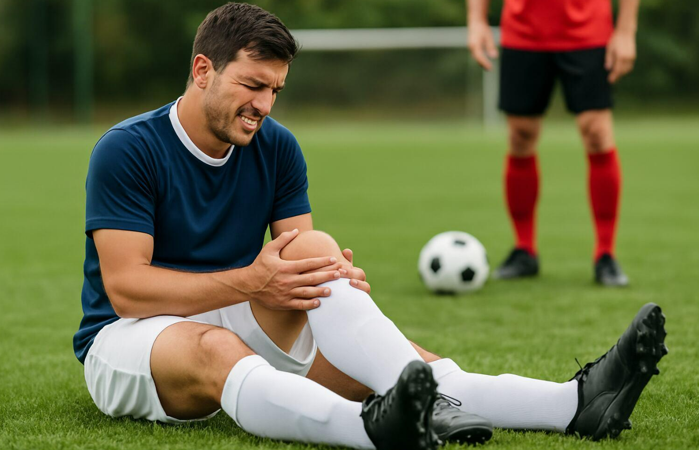

Is My Knee Ready?
Following a sports injury or surgery, we assess strength, mobility, balance, and movement control to help determine your readiness for activity.
STRENGTH & FUNCTIONAL MOVEMENT TESTINGModern physiotherapy technologies designed to support accurate assessment, effective treatment, and confident return to sport.
Every recovery journey starts with a question. We use modern physiotherapy assessments and technology to better understand your condition, monitor progress, and guide your rehabilitation.
Following a sports injury or surgery, we assess strength, mobility, balance, and movement control to help determine your readiness for activity.
STRENGTH & FUNCTIONAL MOVEMENT TESTINGThrough clinical examination, range-of-motion testing, and muscle strength assessment, we help identify movement limitations and factors contributing to discomfort.
MOBILITY & MUSCLE STRENGTH ASSESSMENTWe monitor your rehabilitation progress through regular assessments, comparing strength, mobility, and functional performance over time.
PROGRESS TRACKING & REASSESSMENTDiscover some of the widely used technologies that support modern physiotherapy, sports rehabilitation, and physical performance assessment.
Uses acoustic pressure waves in the management of selected tendon and musculoskeletal conditions, helping support pain reduction and rehabilitation.
MUSCULOSKELETAL REHABILITATIONElectrical stimulation techniques commonly used for pain management and muscle activation during physiotherapy and recovery programs.
PAIN MANAGEMENT & MUSCLE ACTIVATIONUses high-frequency sound waves as an adjunct treatment in selected soft-tissue rehabilitation programs, depending on clinical needs.
SOFT-TISSUE REHABILITATIONUses controlled light energy as a non-invasive treatment option for selected pain and soft-tissue conditions within rehabilitation.
PAIN & TISSUE MANAGEMENTMeasures muscle performance under controlled movement conditions, supporting strength evaluation, rehabilitation monitoring, and return-to-sport decisions.
OBJECTIVE STRENGTH TESTINGMeasures ground reaction forces during movement, jumping, and landing to assess performance, asymmetries, and physical readiness.
SPORTS PERFORMANCE ASSESSMENTInjured during a football match? Explore how rehabilitation progress can be measured and take a quick return-to-football readiness check.
Illustrative sample with fictional measurements. These values do not determine medical clearance or readiness to return to football.

Answer four quick questions about your injury and recovery. This is an educational check, not a medical clearance test.